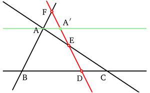

| Choisissez votre langue ! | Choose your language ! |
Le personnage de Menelaüs
Le paragraphe qui suit est un copié-collé de la page de Wikipédia consacré à Ménélaüs :Ménélaüs ou Ménélaos d'Alexandrie (fin du Ier siècle) est un mathématicien et astronome grec. Par analogie avec la propriété qu'ont les droites dans le plan, de déterminer le plus court chemin entre deux points, il introduisit la notion de géodésique sur la sphère. On sait par un dialogue de Plutarque, De facie in orbe lunæ, que Menelaüs passa une partie de sa vie à Rome, mais Pappus d'Alexandrie et Proclus laissent entendre qu'il avait étudié dans sa jeunesse à Alexandrie. Ptolémée, au second siècle de notre ère, dit également dans son Almageste (chap. VII.3), que Ménélaos observa deux occultations des étoiles α Virginis (Spica) et β Scorpii par la Lune à Rome en janvier 98, à seulement quelques jours d'intervalle. Pour Ptolémée, elles confirmaient la précession des équinoxes, un phénomène découvert par Hipparque au deuxième siècle av. J. C. Les Sphériques est le seul traité de Ménélaos qui soit parvenu jusqu'à nous, et cela par une traduction arabe. Ces trois livres traitent de la géométrie de la sphère et de ses applications à l'astronomie. C'est ce traité qui définit le triangle sphérique comme formé par trois arcs de grands cercles, les trilatéraux, et qui contient le théorème suivant, dit théorème de Ménélaüs, étendu aux triangles sphériques.
Le théorème de Ménélaüs
Menelaus as a person
The following paragraph is copied and pasted from the Wikipedia page dedicated to Menelaus:Menelaus or Menelaos of Alexandria (late 1st century) was a Greek mathematician and astronomer. By analogy with the property that straight lines in the plane have of determining the shortest path between two points, he introduced the notion of geodesic on the sphere. We know from a dialogue of Plutarch, De facie in orbe lunæ, that Menelaus spent part of his life in Rome, but Pappus of Alexandria and Proclus imply that he had studied in his youth in Alexandria. Ptolemy, in the second century of our era, also says in his Almagest (chap. VII.3), that Menelaos observed two occultations of the stars α Virginis (Spica) and β Scorpii by the Moon in Rome in January 98, only a few days apart. For Ptolemy, they confirmed the precession of the equinoxes, a phenomenon discovered by Hipparchus in the second century BC. J.C. The Sphericals is the only treatise by Menelaos that has come down to us, and that through an Arabic translation. These three books deal with the geometry of the sphere and its applications to astronomy. It is this treatise which defines the spherical triangle as formed by three arcs of great circles, the trilateral ones, and which contains the following theorem, known as the Menelaus theorem, extended to spherical triangles.
The Menelaus theorem
théorème 1
Si D, E et F sont trois points des côtés (BC), (AC) et (AB) vus comme des droites d'un triangle ABC, alors D, E et F sont alignés si et seulement si
\( \displaystyle \frac{\overline{DB}}{\overline{DC}} \times \frac{\overline{EC}}{\overline{EA}} \times \frac{\overline{FA}}{\overline{FB}} = 1 \)
theorem 1
If D, E and F are three points of the sides (BC), (AC) and (AB) seen as lines of a triangle ABC, then D, E and F are aligned if and only if
\( \displaystyle \frac{\overline{DB}}{\overline{DC}} \times \frac{\overline{EC}}{\overline{EA}} \times \frac{\overline{FA}}{\overline {FB}} = 1 \)
Une telle droite est appelée une
'ménélienne'
du triangle ABC.
Such a line is called a
'menelian'
of triangle ABC.

Image:http://fr.wikipedia.org/wiki/Théorème_de_Ménélaüsdémonstration
La parallèle à (BC) menée par A coupe (FD) en A'.D'après le théorème de Thalès appliqué aux triangles FBD et EDC, on a respectivement :
Égalité (1) \( \displaystyle \frac{\overline{FB}}{\overline{FA}} = \frac{\overline{BD}}{\overline{{AA}'}} \)
Égalité (2) \( \displaystyle \frac{\overline{CD}}{\overline{AA'}} = \frac{\overline{EC}}{\overline{EA}} \)
On obtient l'égalité voulue en multipliant les deux membres de l'égalité (1) par les inverses des deux membres de l'égalité (2).
Réciproque :
Si (EF) et (BC) étaient parallèles, on aurait compte tenu de l'hypothèse :
\( \displaystyle \frac{\overline{DB}}{\overline{DC}} \times \frac{\overline{EC}}{\overline{EA}} \times \frac{\overline{FA}}{\overline{FB}} = 1 \)
En appliquant Thalès dans le triangle ABC :
\( \displaystyle \frac{\overline{EA}}{\overline{EC}} = \frac{\overline{FA}}{\overline{FB}} \)
Et en appliquant à nouveau l'hypothèse :
\( \displaystyle \frac{\overline{DB}}{\overline{DC}} = 1 \) , c'est à dire B=C ce qui est impossible.
(EF) et (BC) sont donc sécantes et soit X leur intersection.
En appliquant le théorème direct on a:
\( \displaystyle \frac{\overline{XB}}{\overline{XC}} \times \frac{\overline{EC}}{\overline{EA}} \times \frac{\overline{FA}}{\overline{FB}} = 1 \)
Donc X et D . D'où X=D et l'alignement des 3 points E,F,D.
proof
The parallel to (BC) carried by A intersects (FD) in A'.According to Thales' theorem applied to triangles FBD and EDC, we have respectively:
Equality (1) \( \displaystyle \frac{\overline{FB}}{\overline{FA}} = \frac{\overline{BD}}{\overline{{AA}'}} \)
Equality (2) \( \displaystyle \frac{\overline{CD}}{\overline{AA'}} = \frac{\overline{EC}}{\overline{EA}} \)
The desired equality is obtained by multiplying the two members of the equality (1) by the inverses of the two members of the equality (2).
Converse:
If (EF) and (BC) were parallel, we would have taken into account the hypothesis:
\( \displaystyle \frac{\overline{DB}}{\overline{DC}} \times \frac{\overline{EC}}{\overline{EA}} \times \frac{\overline{FA}}{\overline {FB}} = 1 \)
By applying Thales in triangle ABC:
\( \displaystyle \frac{\overline{EA}}{\overline{EC}} = \frac{\overline{FA}}{\overline{FB}} \)
And applying the assumption again:
\( \displaystyle \frac{\overline{DB}}{\overline{DC}} = 1 \) , i.e. B=C which is impossible.
(EF) and (BC) are therefore secant and let X be their intersection.
By applying the direct theorem we have:
\( \displaystyle \frac{\overline{XB}}{\overline{XC}} \times \frac{\overline{EC}}{\overline{EA}} \times \frac{\overline{FA}}{\overline {FB}} = 1 \)
So X and D . Hence X=D and the alignment of the 3 points E,F,D.
Vérification expérimentale du théorème de Ménélaüs
Voici une appliquette qui vous permet de faire varier les 6 points A,B,C,D,E,F avec la souris :Le point D sur la droite (BC)
Le point E sur la droite (AC)
Le point F sur la droite (AB)
A chaque fois le rapport \( \displaystyle m=\frac{\overline{DB}}{\overline{DC}} \times \frac{\overline{EC}}{\overline{EA}} \times \frac{\overline{FA}}{\overline{FB}} \) est calculé et affiché en haut à droite.
L'alignement absolu est difficile à obtenir mais, pour raison de continuité, plus les points semblent alignés et plus la valeur affichée doit être voisine de 1.
Experimental verification of Menelaus' theorem
Here is an applet that allows you to vary the 6 points A,B,C,D,E,F with the mouse:Point D on the line (BC)
Point E on the line (AC)
Point F on the line (AB)
Each time the ratio \( \displaystyle m=\frac{\overline{DB}}{\overline{DC}} \times \frac{\overline{EC}}{\overline{EA}} \times \frac{\overline{FA}}{ \overline{FB}} \) is calculated and displayed at the top right.
Absolute alignment is difficult to obtain but, for reasons of continuity, the more the points seem aligned, the closer the displayed value must be to 1.
|
Création Gilles Dubois
Created by Gilles Dubois
|
Janvier 2022
January 2022
|
Version mobile Jquery
Mobile Jquery version
|
|